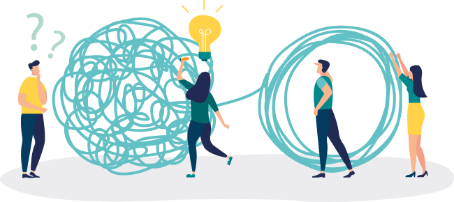

자료 읽기갈등의 긍정성

독일의 사상가 지멜은 갈등을 집단의 분열과 대립을 부추겨서 파멸로 이끄는 것이 아니라 통합을 위한 방법이 될 수 있다고 보았다. 즉 ‘비 온 뒤 땅이 더 굳어진다.’라는 말처럼 갈등 은 집단의 통합을 더 굳건히 하는 방법이나 수단이라는 것이다. 바꿔 말하면 갈등이 없는 집단의 통일은 불안정하다는 뜻이다. 학교에서는 학생과 교사, 학생 간의 갈등, 가정에서는 부모 와 자녀, 자녀 간, 부부간의 갈등, 그리고 연인 간 갈등 등 우리는 항상 갈등 속에서 살아가고 있다. 이러한 갈등 후에 이루어 지는 화해는 집단의 통일을 한층 더 강화한다.
- 지멜, 『지멜의 갈등론』
● 다른 사람과 갈등을 겪고 바람직하게 해결하여 오히려 관계가 더 좋아진 경험이 있는지 이야기해 보자.
의사가 되길 원하시는 부모님과 미술을 전공하기를 원하는 나 사이의 갈등이 생겼을 때 내가 생각하는 나의 미래에 대해 솔직하고 구체적으로 말씀드렸다. 의대에 진학 하기에는 수학과 과학 성적이 좋지 않은 반면, 독창성과 창의성, 표현력을 인정받아 다수의 미술 대 회에서 수 상한 경험과 그때 내가 느낀 행복에 대해 말씀드렸다. 내가 솔직하게 말씀드리 니 부모님도 나 의 마음을 이해해 주셨다.